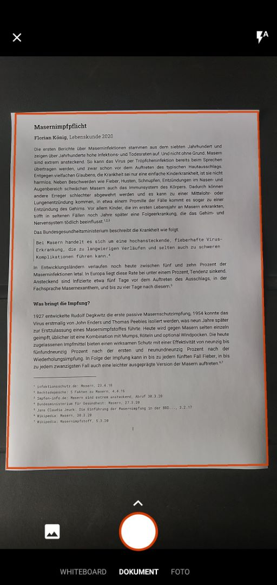
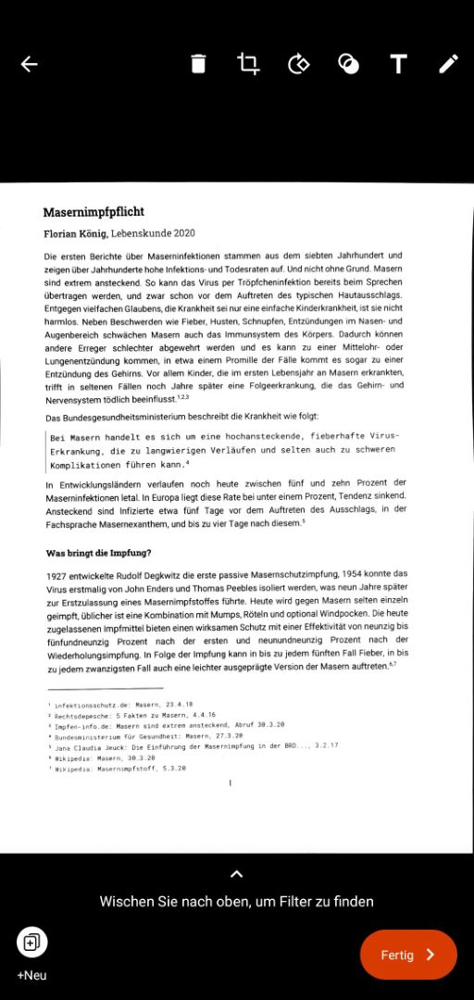

Jetzt siehst du die Scan-Ansicht. Stelle sicher, dass dein Dokument gut beleuchtet auf einem kontrastreichen Hintergrund liegt und halte dein Handy möglichst gerade darüber.
Tippe dann auf den Auslöser.
Im nächsten Schritt stellst du sicher, dass die erkannten Ränder stimmen und bestätigst dies.
Dann kannst du entweder unten links weitere Seiten hinzufügen oder unten rechts zum nächsten Schritt gelangen.
Auf gehts zum nächsten Schritt